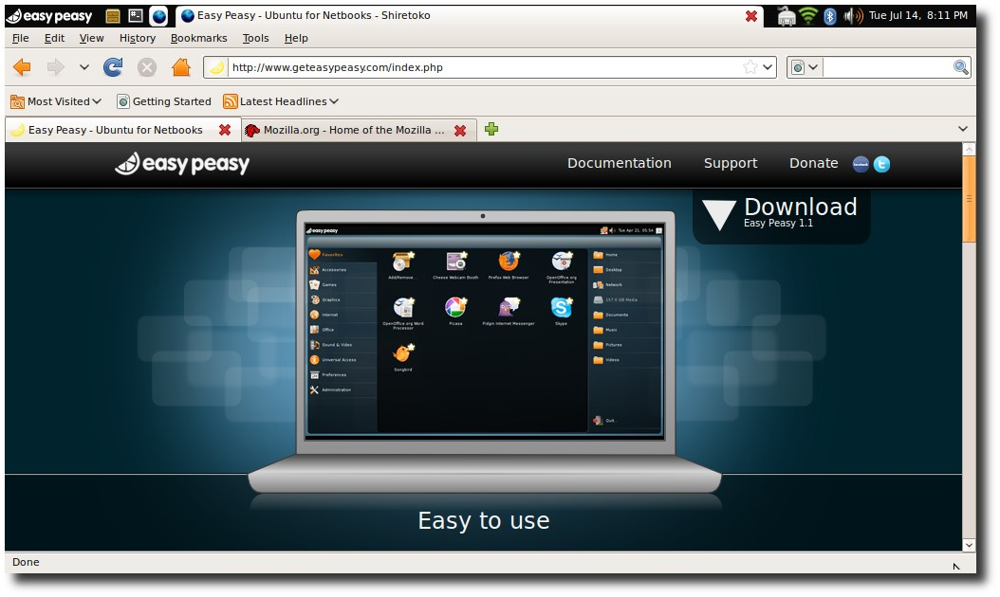
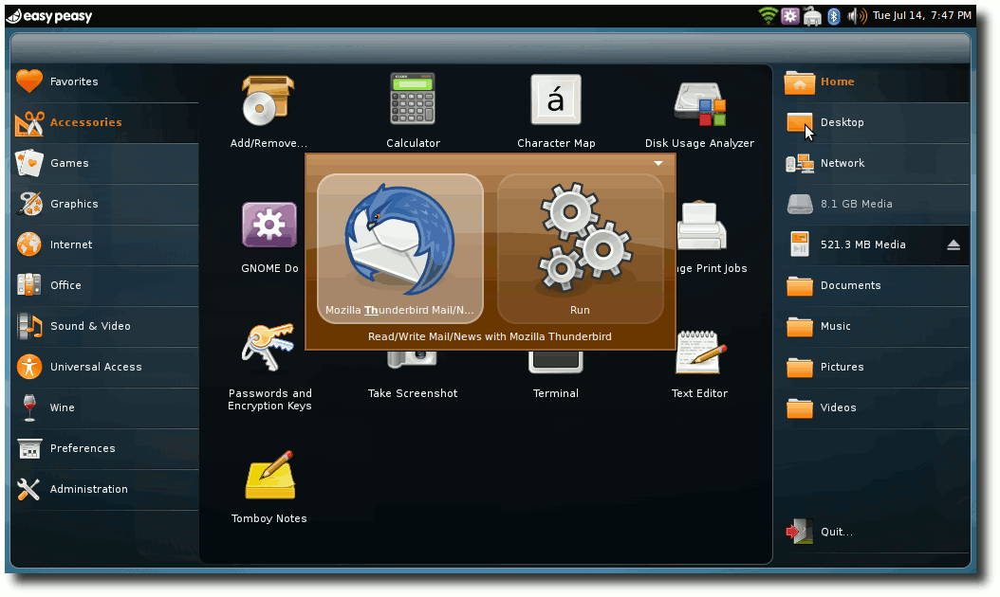
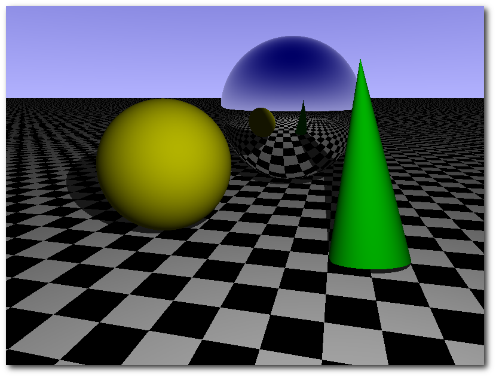
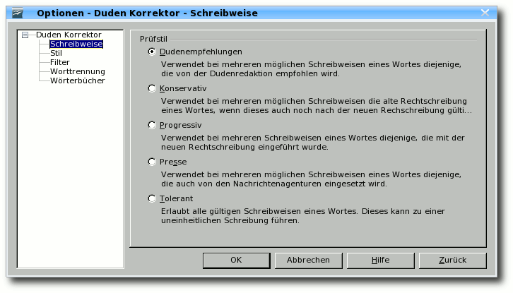
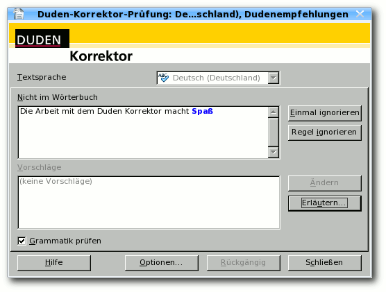
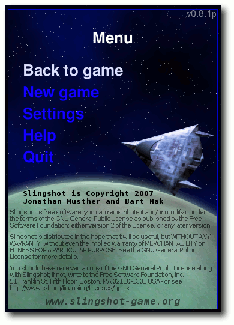
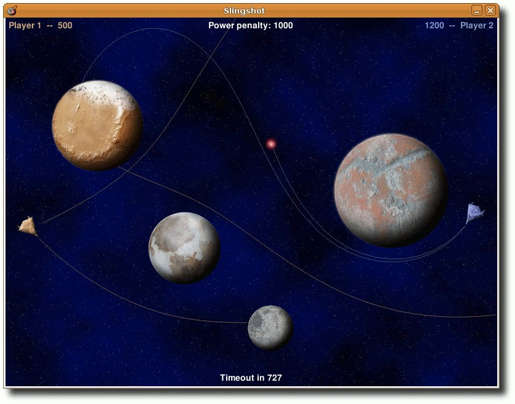
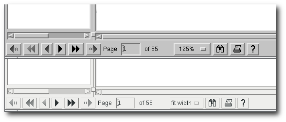
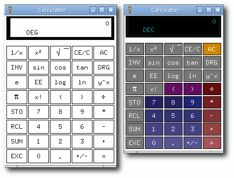
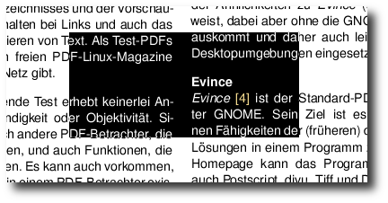

freiesMagazin September 2009 (ISSN 1867-7991)
Topthemen dieser Ausgabe
Einfach Easy Peasy
Mit Easy Peasy 1.1 kommt eine weitere Distribution für Netbooks ins Spiel. Eine möglichst einfache Installation und Bedienung stehen bei Easy Peasy im Vordergrund. Das hört man gerne und möchte es ausprobieren. (weiterlesen)
Der Raytracer POV-Raytracer
Mit dem quelloffenen Raytracer POV-Ray kann man sehr realitätsnahe Bilder erzeugen. Anders als bei den meisten anderen 3-D-Grafikprogrammen arbeitet man hier nicht mit einer graphischen Oberfläche und der Maus, sondern beschreibt die Objekte textbasiert über deren Positionen in einem Koordinatensystem. (weiterlesen)
Zum Index
Inhalt
Linux allgemein
Einfach Easy Peasy
Der August im Kernel-Rückblick
Anleitungen
Linux auf der Nintendo Wii
Software
Der Raytracer POV-Raytracer
Duden Korrektor im frischen Wind
Slingshot – Steinschleuder im Weltraum
Xpdf
Community
Debian GNU/Linux – Das umfassende Handbuch
Magazin
Editorial
Leserbriefe
Veranstaltungen
Konventionen
Vorschau
Impressum
Zum Index
Editorial
Ereignisreicher August05.08.2009 - Frau gegen Mann
Anfang August erhielten wir einen Leserbrief, der darauf hinwies, dass wir auf unserer Webseite keine geschlechterneutrale Sprache benutzen. Unter geschlechterneutral versteht man ausnahmsweise einmal nicht das von uns in Artikeln bevorzugte „man“ gegenüber der direkten Anrede, sondern die Ansprache beider Geschlechter gleichzeitig (siehe „Geschlechterneutrale Sprache“, Prof. Dr. Susanne Ihsen, TU München (Link)). Im Detail bedeutet das also, dass wir Sie, liebe Leser, entweder mit „Leserinnen und Leser“ oder (geschlechterneutral) mit „Lesende“ ansprechen sollten. Wir selbst haben uns in unseren Autorenrichtlinien (Link) bei Artikeln dagegen entschieden, da es oftmals viel zu aufwändig ist, immer die korrekte Form für beide Geschlechter zu verwenden oder eine geschlechterneutrale Formulierung zu finden. Aus dem Grund reicht uns bei der Ansprache ein „Leser“ und ein „Autor“, obwohl beide Geschlechter gemeint sind. Es stellt sich nun (vor allem für unsere weiblichen Leser) die Frage: Stoßen wir Sie mit dieser rein „männlichen“ Formulierung vor den Kopf? Oder fühlen Sie sich dennoch angesprochen, auch wenn kein „-innen“ am Wortende zu finden ist? Wir wissen von unserer Umfrage (Link), dass wir auch einige weibliche Leser haben. Also haben Sie den Mut und schreiben Sie uns unter11.08.2009 - Eine Woche ohne Google
Albrecht Ude hat Mitte des Monats ein kleines Experiment mit dem Titel „Eine Woche ohne“ gestartet (Link). Sinn dieser Aktion ist es, für mehr Vielfalt im Netz zu sorgen, denn seit einigen Jahren dominiert Google sehr viele Bereiche weitgehend. Angefangen bei der Suche in jeglichen Formen über Landkarten und Routenplanung bis hin zu E-Mail oder Videoportal. Jeder ist dazu aufgerufen, eine Woche auf alle Google-Dienste zu verzichten und seine Erfahrung in Udes Blog als Kommentar zu hinterlassen. Genügend Alternativen findet man dort auch (Link).18.08.2009 - spam, Spam, SPAM
Dadurch, dass freiesMagazin aktiv im Netz tätig ist, bleibt es nicht aus, dass unsere Redaktionsadresse relativ viel Spam ausgesetzt ist. Im Laufe des Augusts wurden wir aber wahrlich davon zugeschüttet, was vor allem daran lag, dass ein Spam-Versender die freiesMagazin-Adressen als Absender benutzte und wir von den ganzen Mailer-Dämonen im Falle einer Nichtzustellung (weil es sich um Spam handelt oder weil der Empfänger nicht existiert) die Antwort erhielten. Das bedeutet, dass um die 50 Spam-Mails pro Tag bei uns eintrafen, die vom Server des eigentlichen Spam-Empfängers zurückgeschickt wurden. Leider ist davon nicht nur die Redaktionsadresse betroffen, sondern auch alle anderen Adressen - d. h. die der Teammitglieder und der Autoren, die eine solche Adresse besitzen. Einige beschwerten sich bereits über diese Masse an Spam, sodass wir uns zu einigen drastischen Umstellungen entschlossen haben. In Zukunft wird es im Magazin nur noch eine freiesMagazin-Adresse als Kontakt geben und das ist die der Redaktion. Sowohl die Mitarbeiter als auch die Autoren können nur noch direkt über die Redaktion angeschrieben werden. Da die Resonanz, die ein Autor direkt erhielt, in der Vergangenheit aber extrem gering war, ist dies keine so großer Änderung. Daneben wird sowohl auf unserer Webseite als auch im Magazin die E-Mailadresse nur noch als Bild zu sehen sein. Ein Copy & Paste der Adresse ist also leider nicht mehr möglich, aber auf die Art sind wir (vorerst) vor weiteren Spam-Crawlern geschützt. Diese Änderungen haben wir auch rückwirkend für alle Ausgaben von freiesMagazin angewandt, sodass nun überall nur noch die Adresse der Redaktion zu finden ist. In den Ausgaben der Jahre 2008 und 2009 als Bild, davor aus technischen Gründen nach wie vor im (klickbaren) Reintext. Wir wissen, dass dies drastische Maßnahmen sind, aber wir hoffen, damit der Lage etwas Herr zu werden. Und gleichzeitig hoffen wir, dass die Resonanz unserer Leser nicht abnimmt. Sie können uns ja gleich eine E-Mail an31.08.2009 - Wo sind all die Autoren hin?
Letzten Monat dachten wir noch, dass das Sommerloch groß an uns vorbei gezogen ist. Diesen Monat spüren wir das Resultat dieser Aussage. Die aktuelle Ausgabe ist mit 30 Seiten etwas kleiner als sonst und auch nächsten Monat sieht es derzeit nicht besser aus. Aus dem Grund brauchen wir dringend neue Artikel, damit freiesMagazin demnächst nicht nur aus einem Artikel besteht. Wenn Sie der deutschen Sprache mächtig sind und einfach nur einmal über Ihr Lieblingsprogramm schreiben wollen, setzen Sie sich mit uns in Kontakt. Sehr oft benutzen die Anwender einige Programme ganz selbstverständich, ohne zu ahnen, dass sonst kaum jemand dieses Kleinod kennt. Sie können das ändern! Und wenn Sie die Schreibwut packt, Ihre Muse aber gerade Urlaub auf den Malediven macht, finden Sie auf der Artikelwunschliste unserer Leser (Link) sicherlich etwas, was Ihnen zusagt. Wir freuen uns über alle Beiträge! Kontaktieren sie uns einfach per E-Mail über- http://www.lte.ei.tum.de/gender/Dokumente/Geschlechtsneutrale\%20Sprache.pdf
- http://www.freiesmagazin.de/mitmachen
- http://www.freiesmagazin.de/freiesMagazin-2009-03
- http://einewocheohne.wordpress.com/2009/08/11/eine-woche-ohne-google-ein-aufruf-fur-mehr-vielfalt
- http://einewocheohne.wordpress.com/2009/08/11/alternative-suchmoglichkeiten-im-internet/
- http://www.freiesmagazin.de/artikelwuensche
- http://www.freiesmagazin.de/kontakt
- http://www.freiesmagazin.de/comment/reply/105\#comment-form
Zum Index
Einfach Easy Peasy
von Thorsten Schmidt Mit Easy Peasy 1.1 kommt eine weitere Distribution für Netbooks ins Spiel. Eine möglichst einfache Installation und Bedienung stehen bei Easy Peasy im Vordergrund. Das hört man gerne und möchte es ausprobieren.Hintergrund
Die aktuelle Version Easy Peasy 1.1 (Link), erschienen am 20. April 2009 und enstanden aus dem Ubuntu-Eee-Projekt, baut auf einem aktualisierten Ubuntu 8.10 auf. Mit der Namenswahl „Easy Peasy“, also die „kinderleichte“ Distribution, erschließt sich auch schon die Zielsetzung des Projekts: Möglichst einfache Bedienbarkeit für jedermann, wobei der Fokus auf einem für Netbooks optimierten Betriebssystem liegt. Gleichzeitig respektiert man man durch die Umbenennung der Distribution von Ubuntu-eee nach Easy Peasy markenrechtliche Ansprüche (Link) seitens des Unternehmens Canonical Ltd. Das gilt sowohl für die doch anders gestalteten Bedienansprüche auf einem Netbook als auch für die Kompatibilität zur verwendeten Hardware. Einen Kompatibilitätsüberblick findet man auf der Projektseite (Link) und ist gleichzeitig ob der Lückenhaftigkeit überrascht.Hardware
Ausprobiert wird Easy Peasy auf einem Acer Aspire One [A 110L]. Typisches Installationsmedium ist hier wieder einmal der USB-Stick, der für das Easy-Peasy-ISO schon eine Mindestgröße von 1 GB aufweisen sollte. Um die ISO-Datei auf den USB-Stick zu bringen, empfiehlt sich Unetbootin (Link). Auf eine Installation wurde verzichtet, da in diesem Review die Hardwareunterstützung und die Bedienbarkeit über das Netbook-Remix-Interface im Vordergrund steht. Entscheidet man sich dagegen für eine Installation, so besteht auch kein Anlass für Befürchtungen irgendeiner Art - Easy Peasy setzt natürlich auf den unter Ubuntu erprobten Installer „Ubiquity“ (Link), Schwierigkeiten dürften so nahezu ausgeschlossen und der Installationsprozess im Wesentlichen identisch zu einer regulären Ubuntu-Installation sein. Firefox auf der Easy-Peasy-Benutzeroberfläche.
Hardwareunterstützung
Nach dem Bootprozess zeigt sich alles in derzeit gewohnter Weise: Sämtliche Hardware des Acer Netbooks wird anstandslos unterstützt. Gut, das wundert einen nicht, denn die Markteinführung des Netbooks liegt schließlich über ein Jahr zurück. Deshalb gibt es an dieser Stelle nur ein Link auf eine Liste der unterstützten Hardware des Acer Aspire One [A 110L] (Link).Mitgelieferte Software
Easy Peasy 1.1 will es seinen Benutzern leicht machen. Natürlich lässt man auch hier das so häufig schon gehörte Mantra „Out-of-the-box“ verlauten und liefert die Distribution standardmäßig mit installiertem Flash und Java, Skype und Google Picasa und somit auch mit nicht-quelloffener Software aus. Der Unterbau der Distribution besteht aus dem Kernel 2.6.27-8-eeepc, also einem speziell für Netbooks angepassten Kernel. Grundvoraussetzung, um die mitgelieferten Programme näher in Augenschein zu nehmen, ist die die Anpassung des Keyboardlayouts, was über „Preferences » Keyboard“ kein Problem darstellt. Nun möchte man auch gerne die mitgelieferte Software ausprobieren.Skype
Nach der Einrichtung eines Testzugangs folgt man der typischen Testprozedur, man setzt also einen „Testcall“ ab - und siehe da: Nichts funktioniert. Fehlermeldung: „Problems with Audio-Playback“. Das konnte schnell über ein Umstellen der benutzten Sounddevices gelöst werden. Danach funktionierte der Testanruf einwandfrei. Ob auch Telefonate mit Video-Unterstützung funktionieren, wurde nicht ausprobiert - zumindest die Einbindung der „Acer Crystal Eye Webcam“ klappte in der Vorschau während des Einrichtens von Skype.Mobiltelefon und Bluetooth
Die Synchronisation von Mobiltelefon und Netbook sollte auch ausprobiert werden. Nachdem das Pairing über den GNOME-eigenen Bluetooth-Assistenten funktionierte, stand dem immer wieder heiklen Experiment nichts mehr im Wege: Zum Einsatz kommt ein Sony Ericsson w890i, Wammu (V. 0.27) und Gammu (V. 1.20) und siehe da - Kontakte und Kalendereinträge konnten erfolgreich abgerufen, modifiziert und auf das Mobiltelefon zurückgespielt werden. Die restliche Software dürfte mit dem Softwareumfang der Ubuntu-8.10-Veröffentlichung vergleichbar sein, also zum Beispiel GNOME 2.24, OpenOffice.org in der Version 3.0, Firefox 3.0.8, Evolution oder auch Pidgin 2.5.2. Um weitere Programme zu installieren, stehen als Softwarequellen die typischen Ubuntu-Repositorys zur Verfügung.Interface - erster Eindruck
Was beim ersten Blick auf die Screenshots von Easy Peasy sofort ins Auge fällt, ist die eigens für Netbooks entwickelte Benutzeroberfläche, ein modifiziertes Netbook Remix Interface (Link) (Link). Das ist nur konsequent, steht bei Easy Peasy doch die opimale Bedienbarkeit für Netbooks im Vordergrund. Um diese optimale Bedienbarkeit zu erreichen, hat man sich für folgendes Prinzip entschieden: Auf der rechten und linken Seite des Desktops befinden sich Kontrollfelder: Links findet man die Einträge, die zuvor im GNOME-Panel eher unter „Anwendungen“ und „System“ lagen, hier hat man also den schnellen Zugriff auf Programme und die Konfiguration des Systems. Rechts findet man hingegen Einträge, die zuvor im GNOME-Panel eher unter „Orte“ zu finden waren. Zwischen den beiden Kontrollfeldern wird der jeweilige Inhalt des aktiven Kontrollfeldes angezeigt - es sei denn, man startet ein Programm, das sich dann sowohl über das rechte als auch das linke Kontrollfeld legt. Um nun wieder zu den Kontrollfeldern zu kommen, hat man auf der linken Seite des oberen Panels die Option, über „easy peasy“ zum Desktop zurück zu gelangen oder aber andere geöffnete Programme in den Vordergrund zu holen. Sicherlich bestehen hierzu noch andere Möglichkeiten über Tastenkürzel, die aber nicht näher erläutert werden. Gerade das Thema „Tastenkürzel“ dürfte bei einem Einsatz auf Netbooks eine wichtige Rolle spielen. Da Easy Peasy auf GNOME 2.24 aufsetzt, sollte das mit dem GNOME-eigenen Konfigurationwerkzeug kein Problem darstellen - so die Vermutung. Möchte man ohnehin mehr auf die Tastatur als Eingabegerät setzen, so lässt sich Gnome-Do leicht über die Paketverwaltung nachinstallieren. Die flinke Variante: Gnome-Do.
Insgesamt hinterlässt das Netbook-Remix-Interface einen ausgewogenen Eindruck. Ein wenig umständlich erscheint der Weg zurück aus einem Programm zum Desktop. Hier wäre es sinnvoll, das rechte und linke Kontrollfeld jeweils durch schlichtes Navigieren mit der Maus an den Seitenrand einzublenden und in den Vordergrund zu rücken, während die Anwendung leicht abgedunkelt in den Hintergrund rückt.
Ausblick
Wirft man einen Blick auf die Seiten des Projekts, dann wird klar, dass Easy Peasy auch in Zukunft die enge Anbindung an Ubuntu beibehalten wird. So setzt die aktuelle Betaversion 1.5 auf dem Ubuntu-9.04-Release auf, welches auch die Grundlage des Easy-Peasy-Releases 2.0 sein soll - so der derzeitige Stand. Darüber hinaus findet man auf den Projektseiten auch Überlegungen zur Gestaltung einer neuen Bedienoberfläche. Konkret spricht man hier von einem „Social-Desktop“, mit dem versucht wird, den sozialen Aspekt des Webs mehr in den Desktop zu integrieren. „We want to move web down to the desktop, as you're using Easy Peasy on a netbook you shouldn't have to start Firefox to start surfing. (...) Default modules should include Facebook, Twitter, Email, Chat and RSS feeds.“, so eine Ankündigung auf der Projektseite (Link). Mit dieser Idee gesellt sich Easy Peasy in die Reihe von Moblin (Link) und KDEs Idee des sozialen Desktops (Link).Fazit
Easy Peasy ist mit Sicherheit einen Blick wert. Der Netbook-Remix-Desktop besticht durch Übersichtlichkeit und seine relativ einfache Bedienbarkeit. Ob man nun auf die relativ schwergewichtige GNOME-Desktopumgebung setzen will oder auf eine leichtere, seinen Vorstellungen entsprechende Lösung, bleibt jedem selbst überlassen, denn hier zeigt sich wieder einmal die Stärke Freier Software: eine Welt voller Möglichkeiten! Links- http://wiki.geteasypeasy.com/Get_Easy_Peasy
- http://www.jonramvi.com/mail-from-canonical/
- http://wiki.geteasypeasy.com/List_of_hardware_and_support_information_for_Easy_Peasy
- http://unetbootin.sourceforge.net/
- https://wiki.ubuntu.com/Ubiquity
- http://wiki.geteasypeasy.com/Netbook_Data:_Acer_Aspire_One
- http://www.canonical.com/projects/ubuntu/unr
- http://wiki.geteasypeasy.com/Introduction_to_Easy_Peasy
- http://www.jonramvi.com/social-desktop
- http://moblin.org/documentation/moblin-netbook-intro
- http://dot.kde.org/2009/05/01/social-desktop-starts-arrive
| Autoreninformation |
| Thorsten Schmidt hat Spaß mit mobilen Helferlein und blickt neugierig auf aktuelle Entwicklungen in Sachen Linux-Distributionen für Netbooks. |
Zum Index
Der August im Kernel-Rückblick
von Mathias Menzer Basis aller Distributionen ist der Linux-Kernel, der fortwährend weiterentwickelt wird. Welche Geräte in einem halben Jahr unterstützt werden und welche Funktionen neu hinzukommen, erfährt man, wenn man den aktuellen Entwickler-Kernel im Auge behält.Rettung für den TTY-Layer
Sorgte Ende Juli noch der Streit zwischen Linus Torvalds und Alan Cox (siehe „Der Juli im Kernel-Rückblick“, freiesMagazin 08/2009 (Link)) für Aufregung, haben sich die Wogen zwischenzeitlich geglättet. Greg Kroah-Hartman hat nun die Verantwortlichkeit für die Pflege des kurzzeitig verwaisten TTY-Layer übernommen (Link) und versucht der von Cox zuvor eingebrachten Änderungen Herr zu werden.Gefährliche Sockets
Ein über acht Jahre unentdeckter Fehler mit der CVE-Nummer CVE-2009-2692 (Link) hielt Anfang August die Linux-Community auf Trab. Bereits seit den frühen 2.4er-Kernel-Versionen führte eine fehlende Überprüfung auf nicht genutzte Zeiger bei der Initialisierung von Sockets, Schnittstellen zur Kommunikation zwischen Netzwerkprotokoll-Stacks und dem System, zu der Möglichkeit, Code mit root-Rechten zur Ausführung zu bringen. Obwohl explizit die Umsetzung der Netzwerkprotokolle hiervon betroffen ist, konnte diese Lücke nur durch einen bereits lokal am System angemeldeten Anwender ausgenutzt werden. Der korrigierende Patch (Link), der nun die Funktion kernel_sendpage() nutzt, welche auf nicht initialisierte Zeiger prüft, sollte mittlerweile von allen Distributoren an ihre Anwender weitergegeben worden sein.Treiber für den VME-BUS
Wenig beachtet, aber im Bereich der Automatisierung von Interesse: Treiber für den VME-Bus (Link) stehen nun direkt im Linux-Kernel zur Verfügung (Link). Die Implementierung wurde viele Jahre außerhalb des Kernels betrieben und laut Kroah-Hartmann gab es mindestens drei verschiedene Umsetzungen, die gleichzeitig irgendwo gepflegt wurden.Who writes Linux?
Die Linux Foundation hat ihre Studie „Who Writes Linux and Who Supports It“ (Wer Linux schreibt und wer es unterstützt) erneuert (Link). Darin beschreiben Greg Kroah-Hartman, Jonathan Corbet und Amanda McPherson den Verlauf der Entwicklung des Linux-Kernels mit Zahlen. Unter anderem geht daraus hervor, dass durchschnittlich alle 81 Tage ein neuer Kernel fertiggestellt wird. Die Zahl der eingebrachten Patches pro Kernel-Version ist stark angestiegen. So wurden in 2.6.11 (März 2005) noch 3616 Patches eingebracht, der aktuelle Kernel 2.6.30 wies mit 11989 Patches mehr als die dreifache Menge auf. Dafür werden mittlerweile im Durchschnitt mehr als sechs Patches pro Stunde angewendet. Die Anzahl der an einer Kernel-Version beteiligten Entwickler ist nicht im gleichen Maßstab gestiegen, so waren an 2.6.30 mit 1150 Personen nicht ganz dreimal so viele beteiligt wie an 2.6.11 mit 389 Entwicklern. Dabei taucht Linus Torvalds unter den TOP30 der Entwickler nicht mehr auf, was wohl der Tatsache geschuldet ist, dass er in erster Linie Verwaltungstätigkeiten wie das Absegnen von Patches und das Zusammenführen der verschiedenen Zweige durchführt. Die für letzteres notwendigen „Merge-Commits“ wurden bei der Auswertung für diese Studie nicht berücksichtigt. Ein stetiges Wachstum hat das reine Volumen des Kernels zu verzeichnen: mit 11,5 Millionen Code-Zeilen ist er seit 2.6.11 auf knapp das Doppelte angewachsen. Diese verteilen sich auf etwa 28000 Dateien, gerade mal eineinhalb mal so viele gegenüber 2.6.11.Entwicklerkernel
Der aktuelle Entwicklerkernel 2.6.31 hatte im August keine großen Überraschungen zu bieten. Nach einer zweiwöchigen Ruhephase wurde 2.6.31-rc6 (Link) freigegeben, in dem bereits der oben genannte Fehler in der Zeigerbehandlung behoben ist. Weiterhin wurde nochmals intensiv am i915-Grafiktreiber und dem Performance-Counter gearbeitet. Die Folgeversion -rc7 (Link) war dann deutlich weniger umfangreich, die aufwändigsten Arbeiten waren an der ARM-Architektur, genauer gesagt im Bereich der OMAP-Prozessoren, sowie an der Infrastruktur für den Radeon-Treiber erfolgt. Mit 2.6.31-rc8 (Link) verabschiedete sich Torvalds dann auch in den Tauchurlaub. Die Version bringt einige letzte Korrekturen eines Fehler in inotify, einem Subsystem zur Überwachung auf Dateisystem-Ereignisse. Es soll die letzte Vorabversion werden, die Veröffentlichung von 2.6.31 ist für den „Labor Day“, also den 7. September, vorgesehen. Links- http://www.freiesmagazin.de/freiesMagazin-2009-08
- http://git.kernel.org/?p=linux/kernel/git/torvalds/linux-2.6.git;a=commit;h=57d7f282271a83fe4ca4bd15eee79be577210210
- http://cve.mitre.org/cgi-bin/cvename.cgi?name=CVE-2009-2692
- http://git.kernel.org/?p=linux/kernel/git/torvalds/linux-2.6.git;a=commit;h=e694958388c50148389b0e9b9e9e8945cf0f1b98
- http://de.wikipedia.org/wiki/VMEbus
- http://www.kroah.com/log/linux/vme-drivers.html
- http://www.linuxfoundation.org/publications/whowriteslinux.pdf
- http://lkml.org/lkml/2009/8/13/549
- http://lkml.org/lkml/2009/8/21/446
- http://lkml.org/lkml/2009/8/27/386
| Autoreninformation |
| Mathias Menzer wirft gerne einen Blick auf die Kernel-Entwicklung, um mehr über die Funktion von Linux zu erfahren. |
Zum Index
Linux auf der Nintendo Wii
von Danny Trunk Spielekonsolenhersteller bieten dem interessierten Anwender in der Regel keinerlei Chancen, auf deren Konsolen selbst Anwendungen zu installieren oder gar zu programmieren. Natürlich gibt es einige Tricks, um auch auf diesen geschlossenen Systemen mehr als nur Spielespaß zu haben, wie z. B. auf der Nintendo Wii. Mit etwas gutem Willen kann man hier in kurzer Zeit die Spielekonsole als Heim-PC ausbauen. Redaktioneller Hinweis: Da im Artikel alle wichtigen Dateien direkt über das Archiv verlinkt sind, kann es sein, dass die Verweise in ein paar Monaten nicht mehr funktionieren bzw. veraltet sind. Hier sollte man auf der jeweiligen Downloadseite die aktuellste Version der angegebenen Software besorgen.Der Homebrew-Channel auf der Wii.
© Drmr (GFDL)
{kind=link}
Hintergrund
Aufgrund einer im Wii-System vorhandenen Sicherheitslücke hat es Team Twiizers (Link) geschafft, eigene Anwendungen (sogenannte Homebrew-Anwendungen) auf der Wii auszuführen. Unter Homebrew (zu deutsch: heimgebraut) versteht man von Privatleuten programmierte Anwendungen, die über den dafür vorgesehenen Homebrew-Kanal ausgeführt werden - leicht und einfach durch das grafische Interface der Wii. Sowohl Homebrew-Kanal als auch die auszuführende Software befinden sich dabei auf einer SD-Speicherkarte. Nachfolgend wird beschrieben, wie man whiite, ein von Debian abstammendes System - wahlweise mit grafischer Oberfläche (Fluxbox) - installiert. Natürlich sind mit der Modifikation sowohl Vor- als auch Nachteile verbunden. Deshalb folgt zuerst ein kurzer Überblick.Nachteile
- Wichtig: Die Geräte-Garantie verfällt. (Tipp: Warten, bis Garantie ohnehin abgelaufen ist.)
- Hardwaretechnische Einschränkungen
- Projekt ist noch in der Entwicklung
- Daraus folgt: Noch keine Unterstützung für eingebautes WLAN (stattdessen funktioniert aber der Nintendo LAN-Adapter oder vielleicht auch ein WLAN-Stick).
Vorteile
- Uneingeschränkte Nutzung von unterstützten USB-Geräten sowie -Laufwerken.
- Kann sowohl als Heim- oder Medien-PC genutzt werden.
- Bei nicht vorhandener USB-Tastatur ist eine virtuelle Tastatur über das Kontext-Menü von Fluxbox (Rechtsklick/B) mit dem Namen xvkbd zu erreichen.
Vorbereitung
Hat man sich entschlossen, aus seiner Wii ein bisschen mehr herauszuholen und die Modifikation durchzuführen, sollte vorher noch geprüft werden, ob die notwendigen Voraussetzungen vorhanden sind.Voraussetzungen (Allgemein)
- Nintendo Wii-Konsole
- Linux-Distribution mit fdisk
- SD-Karte (mind. 512 MB)
- SD-Kartenlesegerät
- Homebrew-Kanal (Link)
Voraussetzungen (automatische Installation)
- USB-Tastatur
- USB-Speichermedium
Installation
Es gibt eine automatische und eine manuelle Installation. Man kann zwischen ihnen wählen, aber die Entscheidung, welche Installationsart in Frage kommt, steht und fällt mit der Antwort auf die Frage, ob man die Voraussetzungen für die automatische Installation erfüllt. Falls nicht, ist die manuelle Installation durchzuführen.Automatische Installation
Falls bereits Daten auf der genutzten SD-Karte vorhanden sind, sollte aufgrund der Formatierung eine Sicherungskopie aller wichtigen Daten durchgeführt werden. Anschließend muss das tar.bz2-Archiv des whiite-linux-Installers von der SourceForge-Projektseite (Link) heruntergeladen und in das Hauptverzeichnis der SD-Karte entpackt werden, sodass anschließend bei eingelegter SD-Karte ein Eintrag im Homebrew-Kanal der Wii-Konsole vorzufinden ist. Man wechselt in das Verzeichnis, in dem das tar.bz2-Archiv des Whiite-Linux-Installers liegt und entpackt es mit dem Befehl:$ tar xfvj whiite-linux-installer-BETA1.tar.bz2 -C /mnt/sdkarteDes Weiteren muss das Tar-Archiv des Komplettpaketes von der SourceForge-Projektseite (Link) heruntergeladen und in das Hauptverzeichnis des USB-Speichermediums entpackt werden. Falls eine grafische Oberfläche gewünscht wird, muss das Dateisystem mit grafischer Oberfläche von hbcapps.com (Link) heruntergeladen werden. Man wechselt also auch hier in das Verzeichnis, in dem die kürzlich heruntergeladene Datei whiite-linux-bundle-0.1_2.6.27b.tar liegt, und entpackt es mit folgendem Befehl:
$ tar xfv whiite-linux-bundle-0.1_2.6.27b.tar -C /mnt/usbmediumFalls eine Installation mit grafischer Oberfläche gewählt wurde, muss man das heruntergeladene Dateisystem mit dem auf dem USB-Speichermedium vorhandenen ersetzen. Dazu wechselt man in das Verzeichnis, in dem sich das heruntergeladene Dateisystem befindet und führt folgenden Befehl aus:
$ cp debian-etch-4.0+whiite-0.1+xwhiite-0.2.tar.bz2 /mnt/usbmedium/debian-etch-4.0+whiite-0.1.tar.bz2Nun wird die USB-Tastatur an die Wii-Konsole angesteckt und im Homebrew-Kanal den für den Installer vorhandenen Eintrag geladen, sodass der Installationsvorgang beginnt. Nun müssen lediglich die am Bildschirm erscheinenden Anweisungen durchgeführt werden. Nach erfolgreich durchgeführter Installation hat man eine in zwei Partitionen unterteilte SD-Karte, wobei man weitere Homebrew-Anwendungen auf den mit FAT formatierten Teil kopieren kann (WiiRadio, Emulatoren für die Nintendo- und Sony-Reihe etc.).
Manuelle Installation
Zunächst sollte auch hier bei vorhandenen Dateien auf der SD-Karte eine Sicherungskopie gemacht werden. Der nächste Schritt besteht in der Partitionierung der SD-Karte. Hier wird fdisk oder ein vergleichbares Werkzeug benötigt, wobei sich die Beschreibung in diesem Artikel an fdisk hält, da dieses Werkzeug bei jeder Linux-Distribution zur Verfügung stehen sollte. Sollten Partitionen der SD-Karte bereits eingehängt sein, muss man diese zunächst aushängen. Mittels folgendeb Befehls wird dies überprüft:$ dfUnd mit Hilfe des nachfolgenden Befehls wird eine eingebundene Partition wieder ausgehängt:
# umount /mnt/einhaengepunktNachfolgende Zeilen zeigen das Starten von fdisk und dessen Ablauf:
# fdisk /dev/geraet Command (m for help): o Building a new DOS disklabel. Changes will remain in memory only, until you decide to write them. After that, of course, the previous content won't be recoverable. Command (m for help): n Command action e extended p primary partition (1-4) p Partition number (1-4): 1 First cylinder (1-984, default 1): <Bestaetigen> Using default value 1 Last cylinder or +size or +sizeM or +sizeK (1-984, default 984): +256M Command (m for help): t Selected partition 1 Hex code (type L to list codes): 6 Changed system type of partition 1 to 6 (FAT16) Command (m for help): n Command action e extended p primary partition (1-4) p Partition number (1-4): 2 First cylinder (126-984, default 126): <Bestaetigen> Using default value 126 Last cylinder or +size or +sizeM or +sizeK (126-984, default 984): <Bestaetigen> Using default value 984Nun ist zu prüfen, ob die Partitionstabelle korrekt aussieht. Sie sollte in etwa wie nachfolgend aussehen:
Command (m for help): p Disk /dev/sdb: 2032 MB, 2032664576 bytes 64 heads, 63 sectors/track, 984 cylinders Units = cylinders of 4032 * 512 = 2064384 bytes Device Boot Start End Blocks Id System /dev/rvlsda1 1 125 251968+ 6 FAT16 /dev/rvlsda2 126 984 1731744 83 LinuxWenn dies der Fall ist, kann die Partitionstabelle auf die SD-Karte geschrieben werden:
Command (m for help): w The partition table has been altered! Calling ioctl() to re-read partition table. Syncing disks.Anschließend werden die Dateisysteme kreiert:
# mkfs.vfat -n boot /dev/geraete_partition1 # mkfs.ext3 -L whiite /dev/geraete_partition2Sobald dies geschehen ist, kann das Kernel-Abbild installiert werden. Dazu wird das eingehängte FAT-Dateisystem benötigt (Partition 1).
# mkdir /mnt/boot # mount /dev/geraete_partition1 /mnt/bootAls nächstes muss das Tar.bz2-Archiv des Kernel-Abbildes von der SourceForge-Projektseite (Link) heruntergeladen und in das Hauptverzeichnis der kürzlich eingebundenen Partition entpackt werden:
# tar xfvj whiite-linux-0.1a.tar.bz2 -C /mnt/boot -o -{}-strip-components 1
Daraufhin muss das zur Zeit aktuellste Kernel-Abbild von der SourceForge-Projektseite (Link) heruntergeladen und in das FAT-Dateisystem kopiert werden:
# cp zImage-2.6.27b-whiite.elf /mnt/boot/apps/whiite-linux/boot.elfIm nächsten und letzten Schritt muss das root-Dateisystem installiert werden. Dafür muss man zunächst die zweite Partition der SD-Karte einhängen:
# mkdir /mnt/whiite # mount /dev/geraete_partition2 /mnt/whiiteSobald man nun das root-Dateisystem (ohne grafische Oberfläche) von der SourceForge-Projektseite (Link) heruntergeladen und entpackt hat
# tar xfvj debian-etch-4.0+whiite-0.1.tar.bz2 -C /mnt/whiiteoder das root-Dateisystem (mit grafischer Oberfläche) von hbcapps.com (Link) heruntergeladen und entpackt hat
# tar xfvj debian-etch-4.0+whiite-0.1+xwhiite-0.2.tar.bz2 -C /mnt/whiitekönnen beide Partitionen wieder ausgehängt und die Einhängepunkte gelöscht werden:
# umount /mnt/boot # umount /mnt/whiite # rm -r /mnt/boot /mnt/whiiteLinux ist nun auf der SD-Karte eingerichtet und kann auf der Wii-Konsole verwendet werden.
Der erste Start
Das Betriebssystem kann letztendlich über den Homebrew-Kanal gestartet werden. Wahlweise kann man auch einen Weiterleitungskanal (engl. Forwarder Channel) (Link) einrichten, womit man Linux direkt über das Systemmenü der Wii-Konsole starten kann. Da aber bis dato noch kein Weiterleitungskanal öffentlich erschienen ist, müsste man selbst Hand anlegen, was aber nur erfahrenen Nutzern zu empfehlen ist! Am Ende können unter anderem wie gewohnt sämtliche Speichermedien eingebunden werden.Weitere Informationen
Gute Anlaufstellen für mehr Informationen zum Thema Nintendo Wii und selbst erstellte Anwendungen sind u. a. die folgenden Webseiten:- Wii-Homebrew (Link)
- WiiData (Link)
- Wii Will Rock You! (Link)
- WiiGURUs (Link)
- wiihack (Link)
- WiiBrew (Link)
- http://wiibrew.org/wiki/Team_Twiizers
- http://de.wikipedia.org/wiki/Wii\#Benutzeroberfläche_mit_Kanälen
- http://downloads.sf.net/gc-linux/whiite-linux-installer-BETA1.tar.bz2
- http://downloads.sf.net/gc-linux/whiite-linux-bundle-0.1_2.6.27b.tar
- http://hbcapps.com/debian-etch-4.0+whiite-0.1+xwhiite-0.2.tar.bz2
- http://downloads.sf.net/gc-linux/whiite-linux-0.1a.tar.bz2
- http://downloads.sf.net/gc-linux/zImage-2.6.27b-whiite.elf
- http://downloads.sf.net/gc-linux/debian-etch-4.0\%2Bwhiite-0.1.tar.bz2
- http://hbcapps.com/debian-etch-4.0+whiite-0.1+xwhiite-0.2.tar.bz2
- http://wadder.net/wiki/index.php/Forwarder_Repository\#What_is_a_forwarder.3F
- http://www.wii-homebrew.com/
- http://www.wiidata.net/
- http://www.wiiwillrockyou.de/
- http://wiigurus.com/
- http://wiihack.tk/
- http://www.wiibrew.org/
| Autoreninformation |
| Danny Trunk ist begeisterter Linux-Benutzer und technisch sehr interessiert. Seine Leidenschaft ist das Programmieren in der von Walter Bright 2007 erschienenen Programmiersprache D. |
Zum Index
Der Raytracer POV-Raytracer
von Marcel Jakobs Mit dem quelloffenen Raytracer POV-Ray (Link) kann man sehr realitätsnahe Bilder erzeugen. Anders als bei den meisten anderen 3-D-Grafikprogrammen arbeitet man hier nicht mit einer graphischen Oberfläche und der Maus, sondern beschreibt die Objekte textbasiert über deren Positionen in einem Koordinatensystem.Was ist Raytracing?
Grundsätzlich ist Raytracing ein auf der Aussendung von Strahlen basierender Algorithmus zur Verdeckungsberechnung. Mit diesem können realistische computergenerierte Bilder erzeugt werden (Link). Der Unterschied zum Shading und Mapping besteht darin, dass eine Strahlverfolgung von den Lichtquellen aus stattfindet und nicht Gittermodelle mit Texturen verwendet werden, um ein Bild der Szene zu synthetisieren („rendern“). Dadurch entstehen wesentlich realistischere Bilder. Allerdings ist dieses Verfahren sehr rechenintensiv. Dafür bekommt man Schatten und Spiegelungen quasi geschenkt, was mit anderen Verfahren nur schwer zu realisieren ist. Einen guten Eindruck, was der Raytracer POV-Ray leisten kann, bekommt man in der Galerie der POV-Ray-Homepage (Link).Download und Installation
POV-Ray steht unter einer eigenen Lizenz, die zwar das Einsehen des Quelltextes, aber nicht die veränderte Weitergabe im Sinne Freier Software erlaubt. Das Programm ist für alle gängigen Betriebssysteme verfügbar und kann sogar in Clustern (also auf mehreren PCs gleichzeitig) verwendet werden. Bei vielen Distributionen ist es über die Paketverwaltung installierbar, ansonsten gibt es die Binärdateien auf der Homepage (Link).Ein mit POV-Ray erzeugtes Bild.
© Gilles Tran (Public Domain)
Grundsätzliche Funktionsweise
In einer Szenenbeschreibungssprache werden alle Objekte, Lichtquellen und die Kamera anhand von 3-D-Positionen im Raum definiert (z. B. Kugel an Stelle x,y,z mit Radius r und Farbe rot). Daneben gibt es noch viele weitere Optionen, um bestimmte Materialien zu simulieren. Daraus wird dann das Bild berechnet. „Der Qualität und dem Anspruch der gerenderten Bilder sind keine theoretischen Grenzen gesetzt; in der Praxis ist die zur Verfügung stehende Rechen- oder Computer-Zeit der begrenzende Faktor.“ (Link) Interessant ist POV-Ray auch wegen der Automatisierbarkeit aufgrund seiner Szenenbeschreibungssprache. Beispielsweise ist EAGLE (Link) ein Programm, um elektronische Schaltungen zu entwerfen und daraus entsprechende Boardlayouts zu konstruieren. Vor dem eigentlichen Bau kann man sich nun mittels eines Skripts aus der Platine zu einem fertigen Layout eine POV-Ray Datei erstellen lassen. Diese kann dann gerendert werden, um eine Vorstellung davon zu bekommen, wie die Platine später aussehen wird.Beispiel
Im folgenden Beispiel wird eine einfache Szene erstellt. Zuerst wird eine Datei mit Farbdefinitionen eingebunden, damit man nicht jede Farbe als RGB-Wert eingeben braucht. Danach wird eine Kamera definiert. Dabei gibt man die Position an, an welcher sie sich befinden soll und die Position, auf welche die Kamera ausgerichtet sein soll. Als Nächstes muss noch eine Lichtquelle definiert werden, damit man auch etwas sehen kann. Diese wird mit dem Schlüsselwort light_source eingeleitet und hat eine Position und eine Farbe. Nun können die einzelnen Objekte definiert werden. Als Boden wird eine Ebene definiert, die schwarz-weiß kariert ist und waagerecht auf der Höhe -1 liegt. Die Lage der Ebene wird durch einen Vektor definiert, welcher senkrecht auf ihr steht. Dahinter kann man einen Offset (der Abstand zum Nullpunkt) - in diesem Fall also die Höhe - angeben. Die Farbe wird mit dem Schlüsselwort pigment angegeben. Da die Ebene kariert sein soll, nutzt man hier die Option checker, gefolgt von zwei Farbwerten, die als RGB-Werte oder Farbnamen angegeben werden. Der Himmel wird durch ein sky_sphere-Objekt erzeugt, welches entlang der y-Achse (gradient y) von Hellblau nach Blau verläuft (color_map). Nun kann man noch weitere Objekte in der Szene platzieren. Eine Kugel (sphere) besitzt einen Mittelpunkt, einen Durchmesser und natürlich auch eine Farbe. Ein Kegel (cone) hat zwei Koordinaten, die den Mittelpunkten der beiden Enden entsprechen sowie je einen Durchmesser an jedem Ende. Neben der Farbe kann auch noch die Oberflächenstruktur und -politur definiert werden. Für die Struktur ist das Schlüsselwort normal zuständig, die Politur wird mittels finish angegeben. Im Beispiel wird der zweiten Kugel eine reflektierende Politur gegeben, so dass sie die anderen Objekte spiegelt. Je höher der Reflektionswert ist, desto stärker ist die Spiegelung. Der Beispielcode:
#include "colors.inc"
// Die Kamera
camera {
location <2, 3, -6>
look_at <0, 1, 2>
}
// Die Lichtquelle
light_source {
<3, 5, -4>
color White
}
// Eine Ebene
plane {
<0, 1, 0>, -1
pigment { checker color White, color Black }
}
// Der Himmel
sky_sphere {
pigment {
gradient y
color_map { [0.0 color rgb <0.7,0.7,1.0>] [1.0 color blue 0.5] }
}
}
// Eine Kugel
sphere {
<-3, 1, 4>, 2
pigment { color Yellow }
}
// Ein Kegel
cone{
<3,-1,3>,1,<2.5,4,4>,0
pigment{color Green}
}
// Eine reflektierende Kugel
sphere {
<0, 2.5, 10>, 3
finish{
reflection { 0.8 }
}
}
Listing: povray-beispiel.pov
Das Bild zu der Szenenbeschreibung kann nun mit POV-Ray gerendert werden:
$ povray +Ipovray-beispiel.pov
Das Ergebnis des Beispiels.
Sonstige Funktionen
POV-Ray kennt noch eine ganze Menge weiterer Objekte, die sich auch zusammenfassen lassen. So kann man wie in der Mengenlehre ein Objekt von einem anderen abziehen oder die Schnittmenge zweier Objekte berechnen und als neues Objekt anzeigen. Auch bei den Farben und Oberflächenstrukturen bzw. -polituren gibt es noch viele weitere Möglichkeiten und Optionen. Definierte Objekte können skaliert (in der Größe geändert), gedreht und verschoben werden. Es können auch wie bei Programmiersprachen Kontrollstrukturen genutzt werden. So kann man Variablen deklarieren, Schleifen und Verzweigungen nutzen sowie Funktionen (bei POV-Ray Makros genannt) definieren, um automatisch eine Reihe von Objekten zu erzeugen und zu transformieren. Man kann mit POV-Ray auch Animationen erstellen. Dafür werden per Skript mehrere Bilder erstellt, wobei vor jedem Bild eine Variable verändert wird. Diese kann genutzt werden, um die Kamera oder Objekte zu bewegen.Weitere Informationen
Eine sehr gute Einführung gibt das Wikibook “Raytracing mit POV-Ray“ (Link). Eine weitere Einführung findet man auf der Seite von Sebastian Rikowski (Link). Wer Tutorials bevorzugt, findet einige auf Friedrich Lohmüllers Homepage (Link). Sehr schön sind auch die freien Objekte von Gilles Tran (Link), die man einfach in seine eigenen Szenen einbinden kann. Links- http://www.povray.org
- http://de.wikipedia.org/wiki/Raytracing
- http://hof.povray.org
- http://www.povray.org/download
- http://de.wikipedia.org/wiki/Povray
- http://www.cadsoft.de/
- http://de.wikibooks.org/wiki/Raytracing_mit_POV-Ray
- http://www.sebastian-rikowski.de/pov-ray/inhalt.htm
- http://www.f-lohmueller.de/pov_tut/pov__ger.htm
- http://www.oyonale.com/modeles.php?format=POV&lang=en
| Autoreninformation |
| Marcel Jakobs nutzt POV-Ray immer wieder, um Entwürfe von Platinen zu erstellen. Auch die Möglichkeiten des Programms und die Realitätsnähe der Bilder begeistern ihn immer wieder. |
Zum Index
Duden Korrektor im frischen Wind
von Stefan Wichmann Obwohl OpenOffice.org bereits eine eigene Rechtschreibprüfung anbietet, ist es sinnvoll, den Duden Korrektor (Link) zu installieren. Er integriert sich in OpenOffice.org und ersetzt die bisherige Kontrolle. Dabei ist genauso einfach zu handhaben wie die in OpenOffice.org integrierte Rechtschreibprüfung und bietet ein Mehr an Funktionen und Sicherheit. Die neue Rechtschreibprüfung vom Bibliografischen Institut & F.A. Brockhaus AG ist seit Mitte Juli 2009 in der Version 6 für knapp 20 Euro verfügbar.Installation
Während der Duden Korrektor für Microsoft Office Word bereits vollständig in Word selbst integriert war, wurde diese Möglichkeit schon ab der Version 5 des Duden Korrektors auch in OpenOffice.org und StarOffice umgesetzt. Dies zeigt, dass die strategische Partnerschaft des Dudenverlags (Link) mit Sun Microsystems (Link) Früchte trägt. Die Grammatikprüfung des Duden Korrektors für OpenOffice.org ist identisch mit der des Duden Korrektors für Microsoft Office. Technisch gesehen haben jedoch Microsoft Office und OpenOffice.org unterschiedliche Schnittstellen, an die der Duden Korrektor angepasst werden musste, damit er in die Software integriert werden konnte. Daher ist das Erscheinungsbild und auch manche Funktion anders gelöst als in Microsoft Office. Durch die Integration in OpenOffice.org kann der Duden Korrektor auch unter 32-Bit-Linux-Betriebssystemen wie openSUSE und Ubuntu betrieben werden. Eine Testinstallation unter dem Betriebssystem Kubuntu in der 64-Bit-Version schlug mit der Fehlermeldung „Die Extension 'Duden Korrektor' ist auf diesem Computer nicht lauffähig“ fehl. Der Duden Korrektor funktioniert somit unter 64-Bit-Systemen nicht. Auf Nachfrage beim Hersteller gibt es noch keine von Sun autorisierte 64-Bit-Version von OpenOffice.org. Vorläufig wird daher auch keine 64-Bit-Version des Korrektors für Linux angeboten (siehe Ubuntu-Center (Link)). Die Installation für OpenOffice.org erfolgt in OpenOffice.org ab der Version 3.0.1 über „Extras » Extension Manager“. Dort wählt man dann die Datei Duden-Korrektor-OpenOffice.org.oxt aus, um den Duden Korrektor zu integrieren und OpenOffice.org neu zu starten. Beachten sollte man als Linux-Nutzer, dass der Duden Korrektor proprietär vertrieben wird. Eine Einsicht in den Quellcode oder gar dessen freie Anpassung oder Weitergabe ist nicht möglich.Einstellungen, die der Duden Korrektor bietet
Nach der zügigen Installation bietet der Extension Manager ein Optionsfeld an, um die Rechtschreibprüfung an eigene Bedürfnisse anzupassen. Der nachträgliche Zugriff auf die Einstellungen erfolgt über „Extras » Optionen“. Die Einstellmöglichkeiten des Duden Korrektors sind vielfältig.
Auszuwählen ist, ob bei mehreren möglichen Schreibweisen eine Rechtschreibkorrektur nach den Empfehlungen vom Duden erfolgen soll oder beispielsweise die Schreibweise, auf die sich Nachrichtenagenturen geeinigt haben. Im Feld „Stil“ kann man festlegen, ob Fremdworte, veraltete Ausdrücke oder Umgangssprache zu markieren sind. Hier ist auch die Satzlänge in die Prüfung einbeziehbar, schließlich verschlechtern Mammutsätze die Lesbarkeit eines Textes erheblich. Filtereigenschaften lassen Einstellungen unter anderem zu Wortgruppen wie „meinen“ und „meinem“ zu. Einstellbar ist zudem, ob auf Verwendung des zweiten Falles (Genitiv) statt des dritten Falles (Dativ) geprüft werden soll. Neben der Einstellung, ob Kommaregeln zu prüfen sind, ist auch die Behandlung von Nebensätzen spezifizierbar. Fehlertypen wie Zusammenschreibung, Höflichkeitsformen und vieles mehr sind vom Bibliographischen Institut als Standard eingestellt und können ebenfalls an eigene Bedürfnisse angepasst werden. Die Trennung von Worten wird nach verschiedenen Trennstilen gesteuert. Im Sinne der Barrierefreiheit von Texten sollte die Worttrennung jedoch ausgeschaltet werden. 
Über „Erläutern“ erhält man Hinweise auch bei grammatikalischen Fehlern.
OpenOffice.org Rechtschreibung vs. Duden Korrektor
In OpenOffice.org werden bei Nutzung der integrierten Rechtschreibkontrolle die gleichen Worte als fehlerhaft angekreuzt wie bei Nutzung des Duden Korrektors. Beide erkennen, dass das Wort „Höchstderselbe“ in kleiner Schreibweise und auseinander zu schreiben ist. Der Duden Korrektor weist zusätzlich darauf hin, dass es sich um einen veralteten Ausdruck handelt. Dafür kennt das mit OpenOffice.org mitgelieferte Wörterbuch bereits das Betriebssystem „Kubuntu“. Dies lässt sich verschmerzen, denn ein neues Wort in den Index aufzunehmen ist bei beiden Programmen kein Problem. Obwohl die Rechtschreibkontrolle bei OpenOffice.org Grammatik und Groß-/Kleinschreibung prüfen soll, erkennt es im Gegensatz zum Duden Korrektor nicht, dass der Ausdruck „reichsunmittelbarer Territorialbesitz eines Bischofs“ am Satzanfang groß zu schreiben ist.Sicherung und Erweiterung
Die Wörterbücher des Duden Korrektors können einzeln auf einen Datenträger gesichert werden. Ein Import aus eigenen Textdateien in die Benutzerwörterbücher ist möglich, da es sich bei den Benutzerwörterbüchern um einfache Textdateien handelt, die jedes Wort in einer separaten Zeile enthalten. Über den Eintrag im Duden Korrektor-Menü unter „Extras“ können Benutzerwörterbücher editiert und einzelne Wörter hinzugefügt oder um Listen erweitert werden.Schlussbemerkung
Fazit des Tests ist, dass die Verwendung des Duden Korrektors unter OpenOffice.org und den unterstützten Betriebssystemen sehr gut funktioniert und im praktischen Einsatz aufgrund der vielfältigen Einstellmöglichkeiten die Rechtschreibkontrolle feiner justierbar ist als die mitgelieferte Kontrolle von OpenOffice.org. Der Kurztest zeigt, dass die Hinweise des Duden Korrektors beim Verbessern von Texten hilfreich sind. Redaktioneller Hinweis: Wir danken dem Dudenverlag für die Bereitstellung einer aktuellen Linux-Datei des Duden Korrektors 6 für OpenOffice.org. Links- http://www.duden.de/deutsche_sprache/index.php?nid=113
- http://www.duden.de/
- http://www.sun.com/
- http://www.ubuntu-center.de/1323/warnung-duden-korrektor-6-ist-nur-fuer-32-bit-systeme/
| Autoreninformation |
| Stefan Wichmann ist Autor mehrerer Bücher und hat für einige von ihnen auch den Duden Korrektor eingesetzt. |
Zum Index
Slingshot - Steinschleuder im Weltraum
von Dominik Wagenführ Gravitation ist manchmal ganz schön nervend. Sie sorgt dafür, dass Äpfel nicht weit vom Stamm fallen oder dass man hinfällt, wenn man stolpert. Auch bei dem Open-Source-Strategiespiel Slingshot (Link) kämpft man gegen die Anziehungskraft. Slingshot ist ein zweidimensionaler Weltraumshooter, der aber mehr auf Taktik setzt als auf wildes Geballere. Das Spiel ist für zwei Spieler an einem PC ausgelegt, kann aber auch allein gespielt werden (indem man auch die Rolle des zweiten Spielers übernimmt) und sorgt für kurzweilige Abwechslung. Bei dem Spiel geht es darum, die Anziehungskraft der Planeten zu nutzen, um seine Rakete auf den Gegner zu lenken. Es ist sozusagen das Weltraum-Pendant des 1987 auf dem Atari ST erschienenen Klassikers „Ballerburg“ (Link). Das Hauptmenü in Slingshot.
Installation
Slingshot kann in den meisten Distributionen mit dem Paket slingshot über die Paketverwaltung installiert werden. Auf der Webseite des Projekts (Link) findet man auch vorkompilierte Pakete für DEB- und RPM-basierte Systeme. Daneben wird ein systemunabhängiger Python-Installer zum Download angeboten, den man nach dem Entpacken über das Skript install.sh ausführt. Natürlich kann man sich aber auch den unter der GNU General Public License (GPL) veröffentlichten Quellcode von der Webseite (Link) herunterla- den. Zum Ausführen muss man nur die beiden Pakete python und python-pygame installiert haben. Die einzelnen Schüsse werden durch Linien markiert.
Spielstart
Nach dem Start (entweder über das Anwendungsmenü unter „Spiele“ oder direkt durch Ausführung der slingshot.py-Datei) landet man im Hauptmenü des englischsprachigen Spiels. Dort kann man einfach auf „New game“ klicken, um ein neues Spiel zu starten. Man sieht je ein Raumschiff am linken und rechten Rand und dazwischen einige Planeten. Über die Cursortasten kann man mittels „Pfeil links“ und „Pfeil rechts“ den Abschusswinkel bestimmen. Über „Pfeil hoch“ und „Pfeil runter“ bestimmt man die Stärke des Schusses. Dabei gilt: Je stärker der Schuss war, desto weniger Punkte gibt es bei einem Treffer. Mit gedrückter „Shift“-Taste ist das Raster für Drehung und Schussstärke etwas gröber, mit der „Strg“-Taste feiner. Nach der hoffentlich richtigen Einstellung drückt man „Space“ oder „Return“ und die Rakete macht sich auf dem Weg und wird dabei von den Planeten angezogen. Sie hinterlässt dabei eine Spur, sodass man sich beim nächsten Versuch daran orientieren kann. Hat man nicht getroffen, ist der Gegenspieler mit seinem Zug an der Reihe.Optionen
Durch die Taste „Escape“ gelangt man während des Spiels wieder ins Hauptmenü. Dort kann man unter „Settings“ diese Einstellungen wählen:| Menü „Game style“ | |
| Auswahl | Bedeutung |
| „Random“ | Per Zufall wird eine oder mehrere der unten genannten Optionen ausgewählt. |
| „Fixed Power“ | Die Schussstärke ist fest auf 200 eingestellt. |
| „Bounce“ | Schüsse prallen am Rand des Fensters ab. Man kann so gut über Eck schießen. |
| „Invisible planets“ | Die Planeten sind unsichtbar und man muss sich durch Testschüsse langsam ans Ziel herantasten. |
| Menü „Game options“ | |
| Auswahl | Bedeutung |
| „Max number of planets“ | Maximale Anzahl von Planeten auf dem Feld. |
| „Number of rounds“ | Anzahl der Runden, die gespielt werden sollen. |
| „Shot timout“ | Sorgt dafür, dass ein Schuss irgendwann verfällt. |
| Menü „Graphics“ | |
| Auswahl | Bedeutung |
| „Particles“ | Schaltet kleine Partikeleffekte ein, wenn ein Schuss einen Planeten trifft. |
Fazit
Slingshot ist ein sehr schönes Zweipersonenspiel, mit dem man sich aber auch allein die Zeit vertreiben kann. Ein Netzwerk- oder Online-Modus mit mehreren Spielern würde natürlich noch viel mehr Spaß ins Spiel bringen. Links- http://slingshot.wikispot.org/
- http://de.wikipedia.org/wiki/Ballerburg
- http://slingshot.wikispot.org/Downloads/Linux
- http://slingshot.wikispot.org/Downloads/Source
| Autoreninformation |
| Dominik Wagenführ spielt sehr gerne unter Linux und vor allem Physiksimulationen machen ihm dabei viel Spaß. |
Zum Index
Xpdf
von Dirk Sohler Ja, Xpdf (Link) ist alt. Seit 1996 wird es angeboten und hat sich seit dem sehr weit entwickelt. Natürlich krankt es auch an seinem Alter. So sieht es mit seiner Motif-GUI (Link) in Zeiten von Compiz & Co. einfach nicht mehr zeitgemäß aus, funktioniert aber hervorragend und muss sich nicht im Geringsten vor modernen PDF-Betrachtern verstecken. Redaktioneller Hinweis: Dieser Artikel wird mit freundlicher Genehmigung des Autors unter der Creative-Commons-Lizenz „Namensnennung-Weitergabe unter gleichen Bedingungen 3.0 Deutschland“ (Link) in freiesMagazin veröffentlicht. Der Hauptkritikpunkt an Xpdf wird wohl dessen GUI sein. Da Xpdf aber den X-Standards (Link) folgt, ist es über entsprechende Ressourcen-Einstellungen sehr gut anpassbar. Wenn man sich das Programm erst einmal angepasst hat, kann man sehr schön damit arbeiten. Dieser Artikel zeigt dies etwas und soll vor allem anregen, es selbst einfach einmal zu probieren.GUI-Anpassungen
Das Anpassen der GUI ist über die Datei .Xresources möglich, welche im Heimverzeichnis liegt und Einstellungen zu verschiedenen Programmen beinhalten kann. Aufgebaut ist die Datei nach dem Schema Programmname*Klasse: Eigenschaft, wobei „Klasse“ einer Einstellung und „Eigenschaft“ ihrem Wert entspricht. So kann eine Zeile beispielsweise wie folgt aussehen:xpdf*background: #eeeeecDies würde die Hintergrundfarbe von Xpdf ändern, wie später noch ausführlicher beschrieben wird. Die Datei wird zum einen bei jeder Anmeldung automatisch eingelesen, kann aber auch mittels
$ xrdb -merge ~/.Xresourcesmanuell eingelesen werden. -merge sagt hierbei, dass die Einstellungen aus der Datei denen hinzugefügt werden, die bereits geladen wurden. Eine andere Option ist -load, welches alle Einstellungen vergisst und nur die aus der Datei .Xressources übernimmt. Dies ist vor allem dann von Nutzen, wenn man eine Einstellung rückgängig machen möchte, ohne den Standardwert explizit angeben zu müssen. Hinweis: Falls die Datei nicht existiert, kann man einfach eine neue erstellen. Motif entstand in einer Zeit, in der 3-D-Effekte (Link) in GUIs sehr beliebt waren. Entsprechend riesig wirken die 3-D-Effekte auch in Xpdf. Durch xpdf*shadowThickness: 1 wird der Effekt auf ein normales Maß reduziert und schon sieht die GUI deutlich weniger schlimm aus. Die Standardeinstellung von Xpdf ist, das Dokument in einer festen Größe anzuzeigen. Da viele das Dokument aber ganz gerne alleine durch die Änderung der Fenstergröße anpassen, kann man xpdf*initialZoom: width verwenden, damit sich das Dokument immer an die Fensterbreite anpasst. Da die Höhe des Fensters automatisch angepasst wird, füllt eine PDF-Seite das Fenster normalerweise gut lesbar ganz aus (vor allem, wenn man einen großen Monitor hat). Wer Fan des Tango!-Iconsets (Link) und der damit verbundenen Farbpalette ist, kann die GUI durch die Angabe von xpdf*foreground: #2e3436 und xpdf*background: #eeeeec „tangofizieren“. 
Der Navigationsbereich von Xpdf vor und nach den GUI-Änderungen.
Im Vergleich zu sexy GTK- oder Qt-Themes ist das natürlich sehr altbacken, aber besser als vorher sieht es allemal aus. Auch den Taschenrechner xcalc kann man auf diese Art verändern. Es existieren dazu sehr viele Ressource-Dateien im Netz. Die Konfiguration in der der Datei .Xresources sieht somit wie folgt aus:
xpdf*shadowThickness: 1 xpdf*initialZoom: width xpdf*foreground: #2e3436 xpdf*background: #eeeeec
Zwei xcalc-Fenster in der Gegenüberstellung.
Copy & Paste
„Strg“ + „C“ und „Strg“ + „V“ ist Windows. Unter X kopiert man mit der Maus (Link). Was? Ja, mit der Maus. X ist ein Grafikserver, dessen essentielles Eingabegerät die Maus ist (genau genommen ein Zeigegerät, das nicht unbedingt eine Maus sein muss). Als solches wird die Maus auch zum Kopieren verwendet. Man markiert in Xpdf durch Klicken und Halten der linken Maustaste einen Bereich, den man kopieren will. Dann öffnet man die Anwendung, in die man den Text einfügen möchte, und drückt die mittlere Maustaste oder die linke und die rechte Maustaste gleichzeitig, wenn man keine mittlere Maustaste hat. Man bekommt jetzt nicht einfach nur Text, sondern, wenn man über mehrere Spalten hinweg etwas ausgewählt hat, Text, der in mehreren Spalten angeordnet ist. Auswahl in einer PDF-Datei in Xpdf über zwei Spalten hinweg.
Das Ergebnis sieht dann zum Beispiel so aus:
ext. Als Test-PDFs auskommt und da F-Linux-Magazine Desktopumgebung Evince rhebt keinerlei An- Evince [4] ist d er Objektivitaet. Si- ter GNOME. Sein DF-Betrachter, die nen FaehigkeitenKlar, man kann den Text nicht kontinuierlich bearbeiten, aber warum sollte man auch? Wer über Spalten hinweg auswählt, bekommt über Spalten hinweg eingefügt. Will man den Text einer Spalte, wählt man nur eine Spalte aus.
Ansichten
Links wird das Inhaltsverzeichnis angezeigt, unten gibt es einige Navigationsfunktionen, die größte Fläche nimmt die Anzeige der PDF-Datei ein. Mittels Rechtsklick auf die Anzeige der PDF-Datei hat man Zugriff auf weitere Anzeigeoptionen. So kann man hier das PDF einfach drehen oder einschalten, dass alle Seiten hintereinander weg angezeigt werden sollen. Gescrollt wird mit dem Mausrad oder mit den Pfeiltasten. Seiten werden gewechselt, indem man entweder die entsprechende Seite aus dem Inhaltsverzeichnis auswählt oder „N“ bzw. „P“ drückt. Durch die Navigationsbuttons mit zwei Pfeilen springt man 10 Seiten, durch die mit einem Pfeil eine Seite und durch die mit einem Pfeil und zwei Strichen alle Seiten in die jeweilige Richtung. Alternativ kann man die Seitenzahl auch direkt eingeben. Wenn man einen Teil markiert hat und per Rechtsklick „Zoom to selection“ auswählt, bekommt man einen Ausschnitt angezeigt, der das enthält, was man markiert hat. Ein Druck auf „W“ und das Dokument wird wieder auf Seitenbreite eingepasst angezeigt. Rotiert werden kann das Dokument selbstverständlich auch. Einfach über Rechtsklick „Rotate ... “ in die richtige Ausrichtung drehen.Fazit
Xpdf tut, was der Name sagt (Link): PDF-Dateien unter X anzeigen. Dabei funktionieren Formulare genau so wenig (damit ist Xpdf aber in allerbester Gesellschaft über alle Betriebssysteme hinweg!), wie es eine „moderne GUI“ gibt. Stattdessen bekommt man einen sehr gut durch X-Einstellungen anpassbaren, verdammt schnellen PDF-Betrachter, der vor allem durch seine enorme Einfachheit besticht. Wenn man sich das Programm seinen Wünschen nach eingerichtet und dabei sehr auf Schlankheit geachtet hat, erhält man einen PDF-Betrachter, der genau so arbeitet wie ein Bildbetrachter: Das Öffnen von Dateien geschieht ohne Verzögerung und der Anwender wird nicht von einer „vollen“ GUI belästigt. Links- http://www.foolabs.com/xpdf/
- http://de.wikipedia.org/wiki/Motif
- http://creativecommons.org/licenses/by-sa/3.0/de/
- http://www.linux-user.de/ausgabe/2001/05/070-desktopia/desktopia-2001-05.html
- http://www.scratchmedia.co.uk/web-design/3d-effects.php
- http://tango.freedesktop.org/Tango_Desktop_Project
- http://www.jennings.homelinux.net/paste.html
- http://en.wikipedia.org/wiki/KISS_principle
| Autoreninformation |
| Dirk Sohler nutzt beruflich und privat ausschließlich Linux und bevorzugt einfache Programme, die schnell starten. Xpdf verwendet er aus genau diesem Grund. Die nicht mehr zeitgemäße, aber angepasste Motif-GUI stört ihn dabei nicht. |
Zum Index
Debian GNU/Linux - Das umfassende Handbuch
von Roman Hanhart Der Bonner Verlag Galileo Computing (Link) hat ein Rezensionsexemplar des Handbuches Debian GNU/Linux (Link) zur Verfügung gestellt. Das Buch ist in der dritten, überarbeiteten und erweiterten Auflage in diesem Jahr erschienen. Verfasst hat es Heike Jurzik (Link). Der gut 800 Seiten starke Band ist sauber gebunden und beinhaltet eine DVD mit dem aktuellen Debian 5 „Lenny“ sowie - wie es bei Galileo Computing immer üblich ist - einen Online-Zugang (Link) zu Aktualisierungen des Buches. Nun ist Debian aus meiner Sicht keine prädestinierte Distribution für Einsteiger. Wohl sind einige ihrer Abkömmlinge, wie etwa Linux Mint (Link), Knoppix (Link) und natürlich Ubuntu (Link) typische Einsteiger-Distributionen, aber die Mutter jener „Linuxe“ ist doch wohl eher etwas für Nutzer, die Linux schon ein wenig kennen. Dennoch richtet sich dieses Buch auch an Einsteiger, was mich zum einen etwas erstaunt, doch zugleich auch freut.Am Anfang steht die Installation
Heike Jurzik gliedert ihr Werk in drei Hauptteile: „Installation“, „Desktop“ und „Administration“ - eine sehr sinnvolle Gliederung. Im ersten Teil gibt es eine kleine Einführung zu Linux und zu Debian, die mir aber etwas zu oberflächlich erscheint. Will die Autorin Ein- und Umsteiger ansprechen, dürften hier durchaus noch einige Informationen mehr zum Linux-Kernel und dessen Aufgaben zu finden sein. Auch zu Richard Stallman (Link) wäre etwas mehr Information nicht schlecht gewesen. Was in der Einführung allerdings gut zur Geltung kommt, ist die Philosophie, welche die Debian-Gemeinschaft zusammenhält, auch wenn die Autorin hier mögliche Kritik vermeidet. Sie streicht lieber die positiven Eigenschaften dieser weltweiten Gemeinschaft heraus und übergeht - wohl aus guten Gründen - die internen Reibereien und politischen Diskussionen. Die technischen Informationen aus allen drei Hauptbereichen liefert die Autorin in einem gut lesbaren Deutsch. Frau Jurzik beschreibt die Installation von Debian in vielen Varianten, auch für Leute, die von Windows kommen und Debian als zweites Betriebssystem nutzen möchten. Außerdem gibt es im ersten Teil viele Informationen zu Netzwerk, X-Server, Paketverwaltung und zum Thema Drucken. Profis dürften in diesem Abschnitt nicht mehr allzu viel Neues entdecken, außer den Neuerungen, die Lenny gegenüber Etch bei der Installation mitbringt. Es gab in diesem Teil allerdings auch einige Schätze zu heben. Gerade die unzähligen Schalter zu apt-get und auch den Unterschied zwischen apt-get und aptitude waren spannend.Mittem im System
Im mittleren Teil geht es dann an das Einrichten des Systems. GNOME (Link), KDE (Link) und alternative Windows-Manager wie Xfce (Link) oder LXDE (Link) werden besprochen. Diverse Internetapplikationen kommen zur Sprache, und Büroanwendungen wie OpenOffice.org (Link), LaTeX (Link), PDF, Desktop-Publishing, Vektorgrafikprogramme, PIMs und die Bereiche Scannen sowie Faxen werden vorgestellt. Weiter gibt es einen großen Abschnitt zu Multimedia und eine Sektion mit Tipps zur Selbsthilfe und zur Community. Auch hier richtet sich der Inhalt sowohl an Einsteiger als auch an Menschen, die Debian schon etwas kennen.Am Ende etwas Administration
Der wohl spannendste Teil ist der abschließende mit dem Titel „Administration“. Hier finden sich zahlreiche Hintergrundinformationen zu Linux (Dateisystem, Benutzerverwaltung etc.), zu Editoren wie Emacs (Link) und natürlich wird auch die Shell besprochen. Dann folgt der Serverteil, in dem Bereiche wie Mailserver, Bind-Server, Webserver, FTP-Server, Samba und Sicherheit beleuchtet werden. Abschließend folgen Informationen zum Upgrade von Etch auf Lenny sowie einige, leider etwas oberflächliche Sätze zum Thema Kernel kompilieren.Fazit
Das Werk ist vor allem ein Buch für Einsteiger und Nutzer, die Debian schon etwas kennen und damit bereits einige Zeit gearbeitet haben. Hier kann eine Menge gelernt werden. Auch Ubuntu-Nutzer finden in diesem Buch wichtige Informationen. Hierzu empfiehlt sich ergänzend die Lektüre des OpenBooks „Ubuntu GNU/Linux“ (Link), ebenfalls aus dem Hause Galileo Computing. Alte Hasen und versierte Systemadministratoren werden mit diesem Buch keinen so großen Erkenntnisgewinn erzielen. Für jene Zielgruppe empfiehlt sich eher ein Buch wie „Debian GNU/Linux“ (Link) aus dem Springer-Verlag. Dieser Titel ist aber leider im Moment vergriffen. Wie dem auch sei: „Debian GNU/Linux - Das umfassende Handbuch“ von Galileo Computing bietet zahlreiche Informationen zu Debian. Dazu konnte ich viel Unbekanntes entdecken und nutze das Buch so vor allem als Nachschlage- und Stöberquelle.| Buchinformationen | |
| Titel | Debian GNU/Linux - Das umfassende Handbuch |
| Autor | Heike Jurzik |
| Verlag | Galileo Computing |
| Umfang | 826 Seiten |
| ISBN | 978-3-8362-1386-6 |
| Preis | 39,90 Euro |
- http://www.galileocomputing.de/
- http://www.galileocomputing.de/katalog/buecher/titel/gp/titelID-2084
- http://www.galileocomputing.de/katalog/buecher/titel/autoren/gp/titelID-2084
- https://ssl.galileo-press.de/mygalileo/buchregistrierung/uebersicht/
- http://www.linuxmint.com/
- http://www.knoppix.org/
- http://www.ubuntu.com/
- http://de.wikipedia.org/wiki/Richard_Stallman
- http://www.gnome.org/
- http://de.kde.org/
- http://www.xfce.org/?lang=de
- http://www.lxde.org/
- http://de.openoffice.org/
- http://de.wikipedia.org/wiki/LaTeX
- http://www.gnu.org/software/emacs/
- http://openbook.galileocomputing.de/ubuntu/
- http://www.springer.com/computer/programming/book/978-3-540-73338-6
| Autoreninformation |
| Roman Hanhart ist über den Umweg Ubuntu zu Debian gekommen und setzt das System sowohl privat als auch beruflich ein. Daneben betreibt er den PodCast DeimHart und unterstützt RadioTux mit Beiträgen. |
Zum Index
Leserbriefe
Für Leserbriefe steht unsere E-MailadresseLeserbriefe und Anmerkungen
Verschlüsselung in Debian
-> Der Debian Installer kann es schon lange und davon habe ich es mir abgeschaut. Einen einzigen verschlüsselten Container braucht man, der die Volume Group bildet und die verschiedenen Mountpoints als Logical Volumes bereithält und eine initrd im unverschlüsselten /boot wie im Artikel beschrieben.Sascha Wüstemann
Pardus
-> Ist es möglich, dass Sie in die Zukunft auch mal Pardus untersuchen? Ich gebrauche es seit einiger Zeit und bin sehr zufrieden mit dieser Linuxdistribution aus der Türkei.Bert Barten <- Wir haben Pardus Linux in unsere Artikelwunschliste (Link) aufgenommen und hoffen natürlich, dass sich unsere Leser auch angesprochen und aufgerufen fühlen, den einen oder anderen Artikel für freiesMagazin über diese Distribution zu schreiben.
Thorsten Schmidt
Entwicklungsstand von Kommander
-> Ich habe einige Anmerkungen zum Entwicklungsstand von Kommander. Der Projektleiter von Kdewebdev Eric Laffoon ist momentan wohl sehr beschäftigt und häufig geschäftlich auf Reisen, weswegen eine zeitnahe Antwort auf die genannte E-Mail wohl nicht erfolgte.Kommander befindet sich in aktiver Entwicklung. Die letzte offizielle Version 1.3.1 für KDE3 erschien im letzten August. Dennoch konnte man im letzten Monat auf der Mailingliste eine allerletzte inoffizielle Version von Kommander für KDE3 beziehen, die schon einige Teile der Entwicklung hin zu Kommander für KDE4 vorweg nimmt.
Wenn man über Kommander diskutiert, muss man immer zwischen dem Editor und dem Exekutor unterscheiden. Der Editor von KDE3 fußt auf einer ziemlich alten Version von Qt Creator. Der neue Editor für KDE4 wird hingegen auf der nahezu vollständig neu geschriebenen Entwicklungsplattform für KDE4 aufsetzen. Dies ist auch ein wichtiger Grund für die Verzögerungen in der aktuellen Entwicklung, da sich die Entwicklungsplattform momentan noch in einer Beta-Phase befindet. Auch der, unter uns hervorragende, Webeditor Quanta leidet aus diesem Grund noch daran, dass keine KDE4-Version existiert. Übrigens benutzt auch Quanta nicht wenige Kommander-Dialoge.
Der Executor hingegen existiert bereits in einer Version für KDE4. Allerdings nennt sich das Binary nicht mehr kmdr-executor, sondern schlicht kommander. Diese Version ist zwar noch fehleranfällig, im Gegensatz zur extrem stabilen Version für KDE3, doch zumindest für wenig aufwändige Dialoge schon gut geeignet.
Ich schreibe diese Zeilen eigentlich nur, um der Vermutung vorzubeugen, Kommander sei alt, oder die Entwicklung eingeschlafen. Nichtsdestotrotz muss ich eingestehen, dass die Website aktueller sein, das SVN von den Entwicklern stärker frequentiert werden und die Mailingliste besser funktionieren könnte.
Alexander Fischer (Kommentar)
PDF-Betrachter im Test
-> Als Ergänzung zum Artikel „PDF-Betrachter im Test“ wollte ich auf die Suchfunktion in der Seitenleiste von Okular hinweisen. Hat man diese z. B. mit „F7“ geöffnet, kann man im Register mit den Vorschaubildern sehr komfortabel und vor allem flott Suchbegriffe finden. Die angezeigten Vorschaubilder werden dabei auf die Seiten mit dem gesuchten Begriff reduziert. Meiner Meinung nach ist das ein klarer Pluspunkt, welcher Okular in dieser Bewertungsrubrik vielleicht sogar ein „++“ einbringen könnte.Mike (Kommentar) <- Vielen Dank für den Hinweis, aber diese Funktion haben wir sogar beschrieben: „Eine besondere Funktion ist, dass man sowohl das Inhaltsverzeichnis als auch die Vorschaubilder durchsuchen kann. Mithilfe des Eingabefeldes über dem jeweiligen Bereich filtert man so nur die Treffer heraus, die einen wirklich interessieren.“ Sie finden diesen Absatz aber nicht im Abschnitt „Suche“, sondern im Abschnitt „Inhaltsverzeichnis und Vorschau“.
Dominik Wagenführ -> Schöner Bericht. Hätte gar nicht gedacht, dass Okular so gut dasteht. Das, wo KDE noch so unfertig ist. Hier noch Ergänzungen:
- Okular kann mit der mittleren Maustaste das Dokument stufenlos zoomen. Tolle Sache. Bei der Bewertung in der Kategorie „Suchen“ sind wohl eher zwei Punkte angebracht. Denn schließlich können die Vorschaubilder auch durchsucht werden. Diese Art der Suche ist viel komfortabler als „Strg“ + „F“. Man sieht in der Vorschau auch eingefärbt, wo der Treffer steht. Die Vorschaubilder können in der Größe variert werden.
- Wie man aus dem PDF-Reader herauskopiert ist sicherlich Einstellungssache. Aber wenn man bedenkt, dass PDF ein Ausgabeformat ist, das nicht weiter verarbeitet werden soll, finde ich die Methode von Okular mindestens einen Punkt mehr wert.
- Die Kategorie Notizen wurde vergessen.
- Evince kann übrigens Bilder direkt aus dem Dokument herauskopieren. Keine Ahnung, ob Okular das auch kann.
Hartmut Brüning <- Vielen Dank für Ihre Anmerkungen. Dass man mit der mittleren Maustaste (zusammen mit gedrückter „Strg“-Taste) zommen kann, wurde im Artikel bereits positiv erwähnt. Ohne „Strg“ kann man mit der mittleren Maustaste nur scrollen.
Die Bewertung bei „Suche“ haben wir aufgrund der Suchfunktionen im Inhaltsverzeichnis und Vorschau um einen Punkt erhöht (siehe Leserbrief oben).
Bezüglich der Kopierfunktion ist es zumindest bei mir als Autor so, dass ich sehr oft Passagen aus PDF-Dokumenten herauskopiere. Vor allem, wenn ich Befehle aus Anleitungen nicht abtippen möchte. Dann ist es sehr hinderlich, wenn die Befehle bei texumflossenen Bildern nicht korrekt kopiert werden können. Das Verhalten ist in der Tat Ansichtssache - die gesamte Bewertung der Funktionen aber auch.
Auf Notizen habe ich als Tester keinen Wert gelegt, da ich diese Funktion nicht nutze. Immerhin einen Screenshot habe ich aber dazu spendiert.
Eine Funktion, zur Direktkopie von Bildern, habe ich in Okular nicht gefunden. Man kann nur einen Bereich auswählen und diesen als Bild speichern, wie im Artikel beschrieben.
Dominik Wagenführ -> Der PDF-Reader-Artikel hat mich sehr interessiert und ich wollte natürlich sehen, wie das von mir genutzte Xpdf so gegen die modernen Programme abschneidet. Mir war recht klar, dass es kaum vorne mitspielen wird wenn man es an modernen Nutzergewohnheiten misst. Dass dies heutzutage so ist, das habe ich schon akzeptiert.
Aber genug gefaselt. Was ich sagen wollte bezieht sich auf [den Abschnitt „Markieren und Kopieren“ bei Xpdf.] [...] Die eigentliche Art unter X zu kopieren, ist es einen Text zu markieren. Damit ist er schon ausgewählt, eine weitere Tastenkombination ist nicht mehr nötig. Eingefügt wird mit der mittleren Maustaste. Der Ablauf ist also viel simpler: Mit links markieren, mit der mittleren Taste einfügen. [...]
Wenn man sich daran mal gewöhnt hat, dann fragt man sich bei Windows jedes Mal wieder, warum man denn da noch Tasten drücken muss, wenn's doch auch ohne geht. ;-)
[...] Das gilt auch für die meisten anderen älteren grafischen Unix-Programme.
Vielleicht noch ein paar Worte zur Qualität des Kopierens bei Xpdf: Man hat keine zeilenorientierte Auswahl sondern markiert mit einem Rechteck. Das hat den Vorteil, dass man auch mehrspaltigen Text ordentlich kopieren kann, was bei Evince ja kaum möglich ist. Allerdings kommt Xpdf nur schlecht mit nicht-ASCII-Zeichen aus. Die Punkte der Umlaute werden gerne als Satzpunkte in einer Zwischenzeile erkannt und andere umbekannte Sonderzeichen werden oft zu Datenmüll. Es geht also kaum ohne Nachzuarbeiten, es sei denn man hätte simplen ASCII-Text.
Im Vergleich zu modernen PDF-Viewern ist Xpdf chancenlos wenn man gegen moderne Nutzungsgewohnheiten wertet. Wenn man aber einen simplen, schnellen PDF-Betrachter will, der so gut wie überall verfügbar ist, dann ist Xpdf durchaus eine gute Wahl. (Ich zum Beispiel würde ihn nicht eintauschen.)
Markus Schnalke -> Mit Xpdf ziehe ich ein Rechteck per Maus über einen Bereich, und mittlerem Mausklick füge ich diesen in gedit beispielsweise ein. Gar kein Problem. Welche populären Methoden des Textkopierens habt Ihr denn probiert? :)
Mit „+“ [und „-“] kann ich auch per Tastatur zoomen.
Ein Klick auf den Kommentieren-Link hat mir aber Opera (deutsch) geöffnet, nicht Firefox, meinen Standardbrowser (dachte ich).
Ihr hättet auch die Startgeschwindigkeit testen sollen - da ist man mit dem Lesen bei Xpdf nämlich oft fertig, bevor der Acrobat [Anm.d.Red.: Adobe Reader ist gemeint] beispielsweise gestartet hat.
Stefan W. (Kommentar) <- Vielen Dank für die vielen Hinweise. Das Kopieren des Textes wurde per Xpdf-Menü, per Kontextmenü und Tastatur „Strg“ + „C“ versucht. Auf die Idee mit der mittleren Maustaste bin ich nicht gekommen, obwohl ich die Funktion in anderen Programmen täglich nutze.
Für den Test wurden Epiphany und Firefox installiert (beides mit Übersetzungen). Epiphany war GNOME-Standardbrowser und Firefox der x-www-browser. Bei einem Klick auf einen Link in Xpdf öffnete sich Epiphany in Englisch. Ggf. war das aber „Zufall“ und Xpdf hat ein anderes Kriterium der Browserauswahl.
Bzgl. Startgeschwindigkeit ist der Adobe Reader in der Tat der Langsamste, alle anderen PDF-Viewer starten in etwa gleichschnell in unter einer Sekunde. Die Behäbigkeit des Adobe Readers wurde im Text aber erwähnt, es wurden nur keine Punkte darauf verteilt, da zumindest ich selten mehrere PDFs innerhalb kurzer Zeit lese und dabei den PDF-Viewer immer wieder schließe. Bei mir bleibt der PDF-Viewer, wenn schon, in so einem Fall immer geöffnet.
Dominik Wagenführ -> Ich muss jetzt aber mal eine Lanze für Xpdf brechen. Abgesehen davon, dass dieses Programm anscheinend eines der wenigen ist, die die Fähigkeit besitzen, eine PDF-Datei zu drehen, hat es auch die wenigsten Abhängigkeiten und startet am schnellsten.
Die GUI, die man in der .Xresources wunderbar mit der X-Standard-Klassen anpassen kann (übrigens eine Technik, die in Zeiten von Compiz & Co. fast völlig in Vergessenheit geraten ist), beschränkt sich auf eine Navigationsleiste und Buttons. Xpdf ist zwar kein sexy GTK-2- oder Qt-4-Programm, sondern ein schlichtes, einfach nur gut funktionierendes Motif-Programm, aber es tut was es soll: PDF-Dateien anzeigen, und das mit einem Funktionsumfang und einer Qualität, bei der sich andere PDF-Reader gerne eine dicke Scheibe abschneiden können.
Dirk Sohler (Kommentar) <- Auch Ihnen vielen Dank für die Hinweise. Die Qualität habe ich nicht getestet bzw. ist mir hierbei kein Kandidat negativ aufgefallen. In allen PDF-Betrachtern war das angezeigte Schriftbild klar und deutlich lesbar. Was den Funktionsumfang angeht, hinkt Xpdf leider seinen Konkurrenten hinterher. So dick kann die Scheibe zum Abschneiden also nicht sein. ;) Wenn man nur einen kleinen, schlanken PDF-Betrachter sucht, der etwas mehr kann als ViewPDF, ist es sicherlich eine sehr gute Alternative.
Dominik Wagenführ
Korrekturen und Fehler
PDF-Betrachter im Test, freiesMagazin 08/2009 (Link)
Aufgrund der obigen Hinweise hat Okular bei der „Suche“ einen zusätzlichen Punkt erhalten. Und auch Xpdf erhielt nachträglich bei der Funktion „Markieren und Kopieren“ zwei zusätzliche Punkte. An dieser Stelle verweisen wir auch auf den Artikel „Xpdf“, den Dirk Sohler kurz nach seinem Leserbrief für freiesMagazin verfasst hat. LinksDie Redaktion behält sich vor, Leserbriefe gegebenenfalls zu kürzen. Die Leserbriefe kommentieren
Zum Index
Veranstaltungskalender
| Messen | ||||
| Veranstaltung | Ort | Datum | Eintritt | Link |
| GNU/Linux/BSD-Session | Waldmünchen | 16.09.-20.09.09 | 43,44 EUR | http://session.pestilenz.org |
| openSUSE Open Day | Nürnberg | 19.09.2009 | - | http://en.opensuse.org/OpenSUSE_Conf_2009 |
| Software Freedom Day | Weltweit | 19.09.2009 | frei | http://softwarefreedomday.org |
| Open Expo | Winterthur | 23.09.-24.09.09 | - | http://www.openexpo.ch/openexpo-2009-winterthur |
| Open-Source-Treffen | München | 25.09.2009 | frei | http://www.opensourcetreffen.de |
| Kieler Linux Tage | Kiel | 02.10.-03.10.09 | frei | http://www.kieler-linuxtage.de |
| Linux Info Tag | Landau | 10.10.2009 | frei | http://infotag.lug-ld.de |
| Ubucon | Göttingen | 16.10.-18.10.09 | 10 EUR | http://www.ubucon.de |
| Linux-Kongress | Dresden | 27.10.-30.10.09 | - | http://www.linux-kongress.org/2009/ |
| The OpenSolaris Developer Conference | Dresden | 28.10.-30.10.09 | - | http://www.osdevcon.org/2009 |
| World Usability Day | Weltweit | 05.11.2009 | - | http://www.worldusabilityday.de |
| OpenRheinRuhr | Bottrop | 07.11.-08.11.09 | frei | http://openrheinruhr.de |
| Brandenburger Linux-Infotag | Potsdam | 21.11.2009 | frei | http://www.blit.org/2009 |
| KNF-Kongress | Nürnberg | 22.11.2009 | - | http://www.franken.de/veranstaltungen/knfkongress |
| LinuxDay | Dornbirn | 28.11.2009 | frei | http://ld.lugv.eu |
Konventionen
An einigen Stellen benutzen wir Sonderzeichen mit einer bestimmten Bedeutung. Diese sind hier zusammengefasst:| $: | Shell-Prompt |
| #: | Prompt einer Root-Shell - Ubuntu-Nutzer können hier auch einfach in einer normalen Shell ein „sudo“ vor die Befehle setzen. |
| ~: | Abkürzung für das eigene Benutzerverzeichnis /home/BENUTZERNAME |
Vorschau
freiesMagazin erscheint immer am ersten Sonntag eines Monats. Die Oktober-Ausgabe wird voraussichtlich am 4. Oktober unter anderem mit folgenden Themen veröffentlicht:- Ordnung ins Chaos mit Org-Mode
- Von der Schaltung zur fertigen Platine mit EAGLE
- Programmierung mit Java
Zum Index
Impressum ISSN 1867-7991 | ||
| freiesMagazin erscheint als PDF und HTML einmal monatlich. | ||
| Redaktionsschluss für die Oktober-Ausgabe: 23. September 2009 | ||
| Kontakt | ||
| Postanschrift | freiesMagazin | |
| c/o Dominik Wagenführ | ||
| Beethovenstr. 9/1 | ||
| 71277 Rutesheim | ||
| Webpräsenz | http://www.freiesmagazin.de | |
| Autoren dieser Ausgabe | ||
| Roman Hanhart | Debian GNU/Linux - Das umfassende Handbuch | |
| Marcel Jakobs | Der Raytracer POV-Raytracer | |
| Mathias Menzer | Der August im Kernelrückblick | |
| Thorsten Schmidt | Einfach Easy Peasy | |
| Dirk Sohler | Xpdf | |
| Danny Trunk | Linux auf der Nintendo Wii | |
| Dominik Wagenführ | Slingshot - Steinschleuder im Weltraum | |
| Stefan Wichmann | Duden Korrektor im frischen Wind | |
| Erscheinungsdatum: 6. September 2009 | ||
| Erstelldatum: 7. September 2009 | ||
| Redaktion | ||
| Dominik Honnef | Thorsten Schmidt | |
| Dominik Wagenführ (Verantwortlicher Redakteur) | ||
| Satz und Layout | ||
| Ralf Damaschke | Yannic Haupenthal | |
| Marcus Nelle | Markus Schaub | |
| Korrektur | ||
| Daniel Braun | Raoul Falk | |
| Stefan Fangmeier | Lukas Martini | |
| Johannes Mitlmeier | Karsten Schuldt | |
| Veranstaltungen | ||
| Ronny Fischer | ||
| Logo-Design | ||
| Arne Weinberg (GNU FDL) | ||
Soweit nicht anders angegeben, stehen alle Artikel und Beiträge in freiesMagazin unter der GNU-Lizenz für freie Dokumentation (FDL). Das Copyright liegt beim jeweiligen Autor. freiesMagazin unterliegt als Gesamtwerk ebenso der GNU-Lizenz für freie Dokumentation (FDL) mit Ausnahme von Beiträgen, die unter einer anderen Lizenz hierin veröffentlicht werden. Das Copyright liegt bei Dominik Wagenführ. Es wird die Erlaubnis gewährt, das Werk/die Werke (ohne unveränderliche Abschnitte, ohne vordere und ohne hintere Umschlagtexte) unter den Bestimmungen der GNU Free Documentation License, Version 1.2 oder jeder späteren Version, veröffentlicht von der Free Software Foundation, zu kopieren, zu verteilen und/oder zu modifizieren. Die xkcd-Comics stehen separat unter der Creative Commons-Lizenz CC-BY-NC 2.5. Das Copyright liegt bei Randall Munroe.
Zum Index
File translated from TEX by TTH, version 3.85.
On 7 Sep 2009, 21:37.